Historia del Club de Fútbol Pachuca
Orígenes y fundación (1892-primeros años)
El Club de Fútbol Pachuca fue fundado el 1 de noviembre de 1892 por trabajadores de origen inglés vinculados a la actividad minera en la región de Pachuca y Real del Monte. Estos inmigrantes introdujeron el fútbol en México, lo que convirtió al club en la institución futbolística más antigua del país. En sus primeros años, el equipo participó en encuentros de carácter amateur y en las primeras competencias organizadas del fútbol mexicano, sentando las bases del desarrollo del deporte en la región.
Etapa amateur y primeras competencias (inicios del siglo XX)
Durante las primeras décadas del siglo XX, Pachuca formó parte de los torneos amateurs que dieron origen al fútbol organizado en México. En este periodo, el club obtuvo algunos campeonatos y reconocimiento local, aunque también atravesó etapas de inactividad y reorganización debido a la falta de estructuras formales y a los cambios constantes en la organización del fútbol nacional.
Profesionalización y periodos en divisiones inferiores
Con la consolidación del fútbol profesional en México, Pachuca pasó por distintas etapas en divisiones inferiores, principalmente en la Segunda División. A lo largo de estos años, el club alternó entre ascensos y descensos, manteniéndose como una institución histórica pero sin estabilidad prolongada en la máxima categoría. Este periodo estuvo marcado por esfuerzos de reorganización administrativa y deportiva para recuperar protagonismo.
Consolidación en la Primera División y transformación institucional
La década de 1990 representó un punto de inflexión para el club. Tras lograr el ascenso a la Primera División en la temporada 1997-1998, Pachuca inició una etapa de estabilidad en la élite del fútbol mexicano. A partir de entonces, el equipo dejó de ser un participante esporádico para convertirse en un club competitivo de forma constante, acompañado de una modernización en su estructura deportiva y administrativa.
Era moderna y proyección nacional e internacional
Desde finales de los años noventa y durante el siglo XXI, Pachuca se consolidó como uno de los clubes más exitosos del fútbol mexicano. El equipo logró múltiples campeonatos nacionales y destacó en competencias internacionales, especialmente en torneos de la CONCACAF y certámenes intercontinentales. Paralelamente, el club desarrolló un modelo enfocado en la formación de jugadores y en la expansión de su proyecto deportivo, fortaleciendo su presencia tanto a nivel nacional como internacional.
Leyendas Del Club
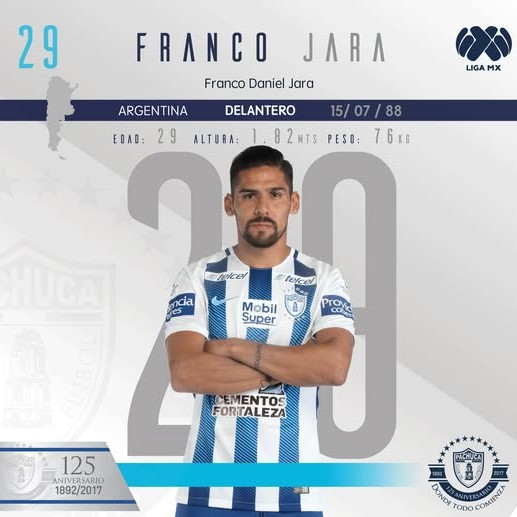
Franco "El Jinete" Jara
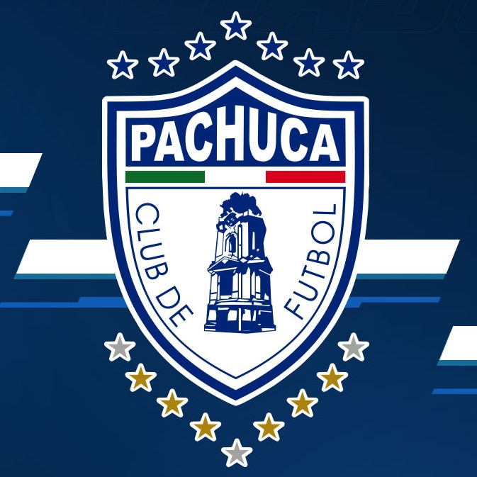
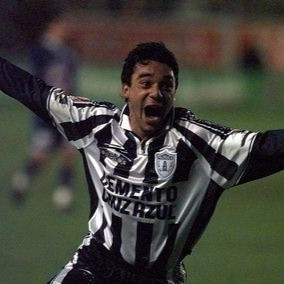
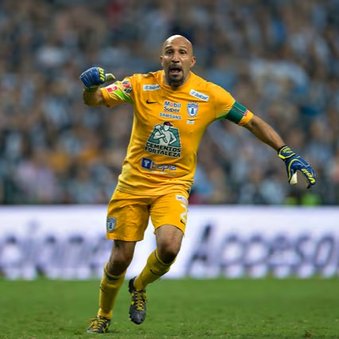
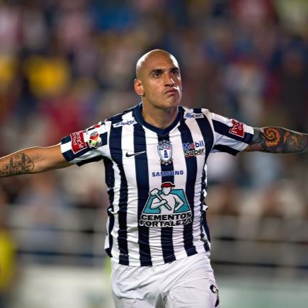
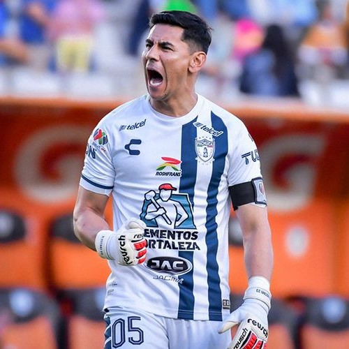
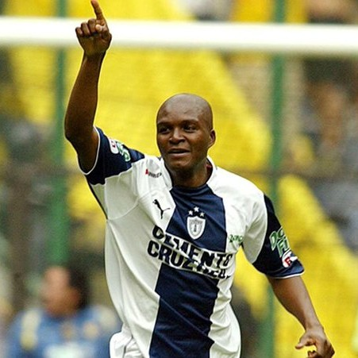
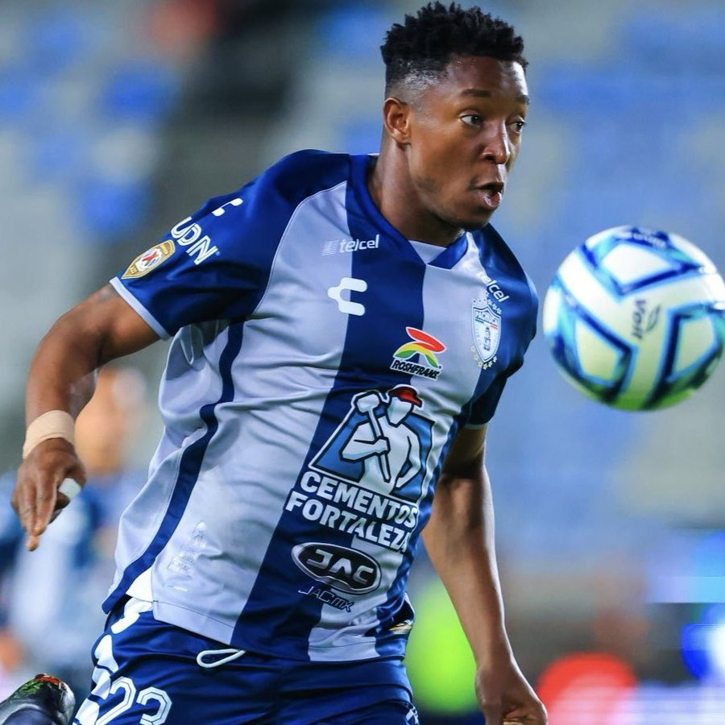
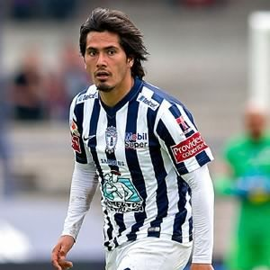
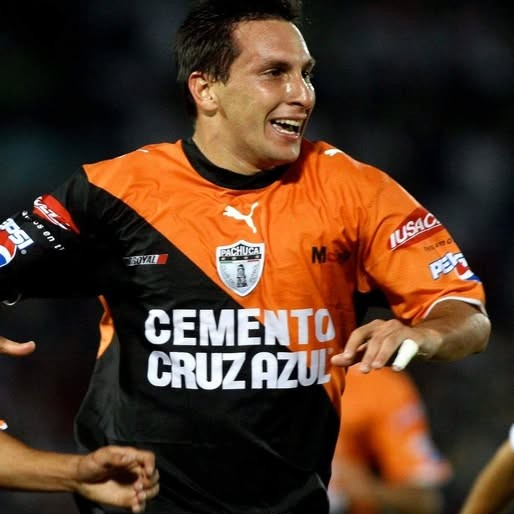
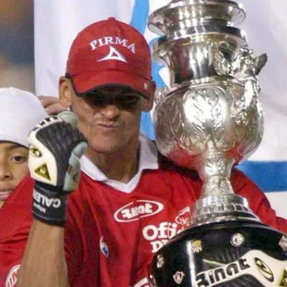
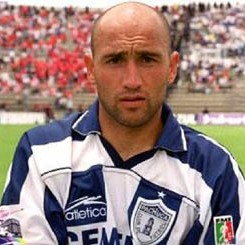
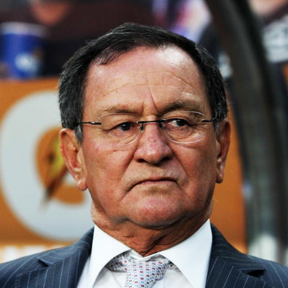
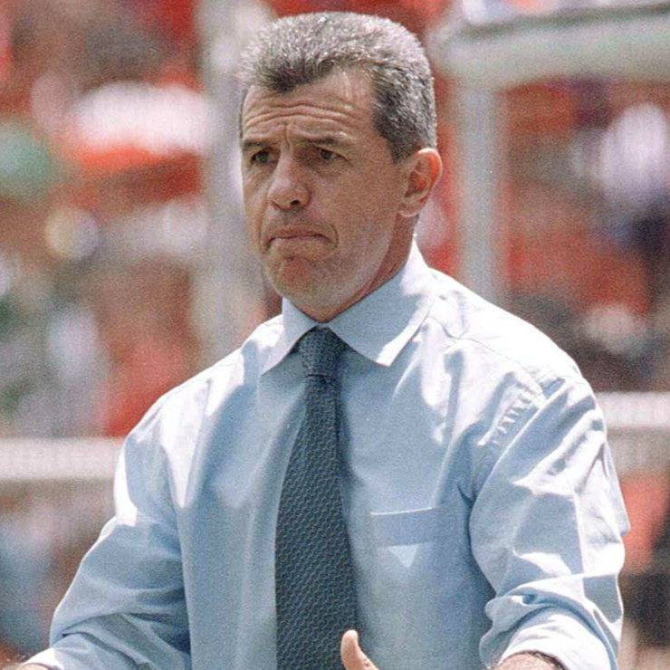